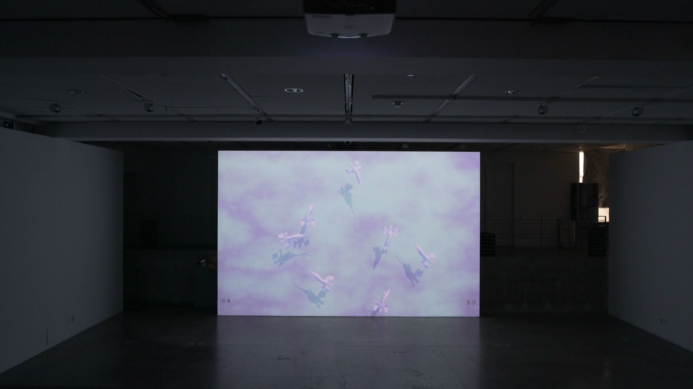
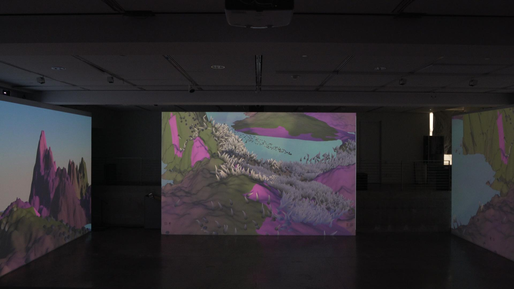
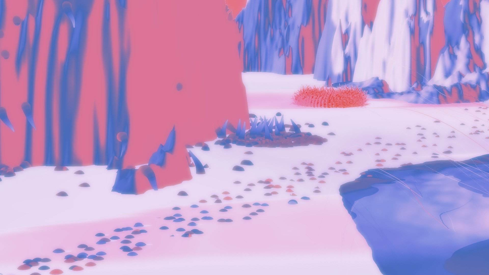
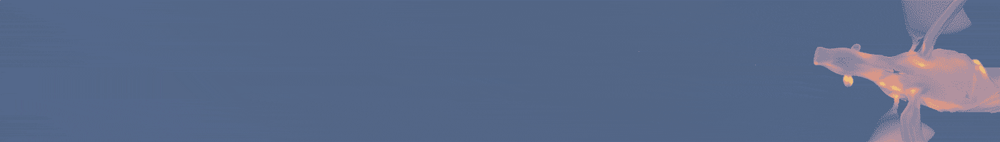
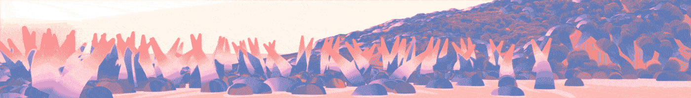
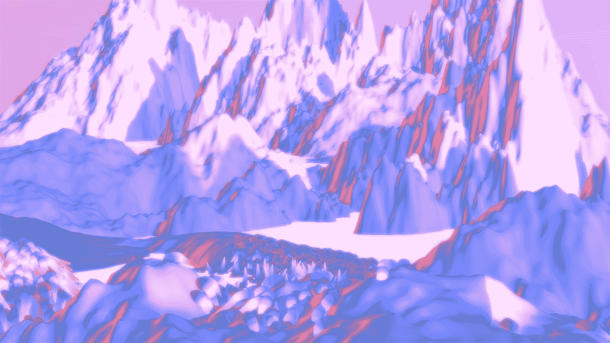
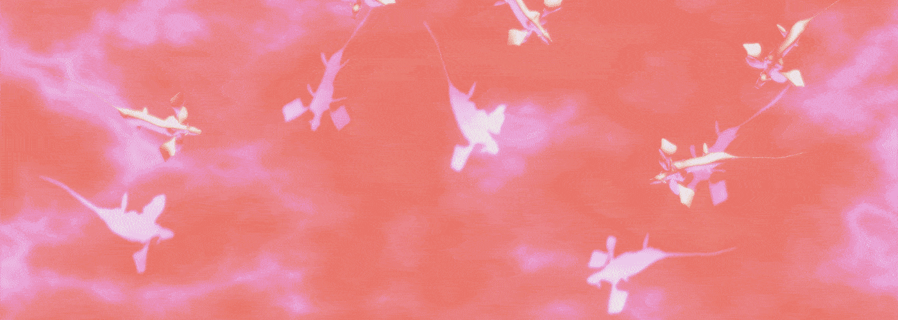
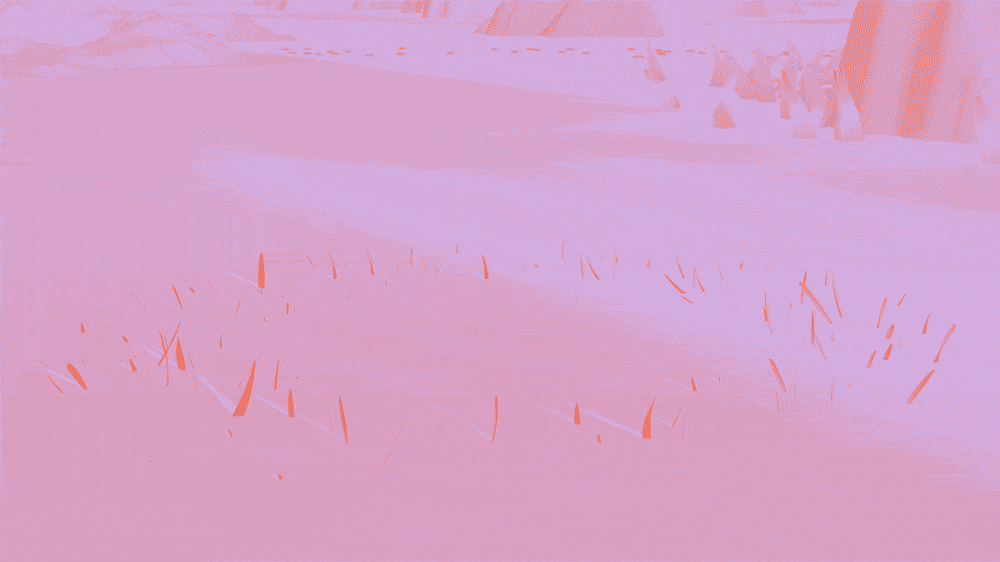
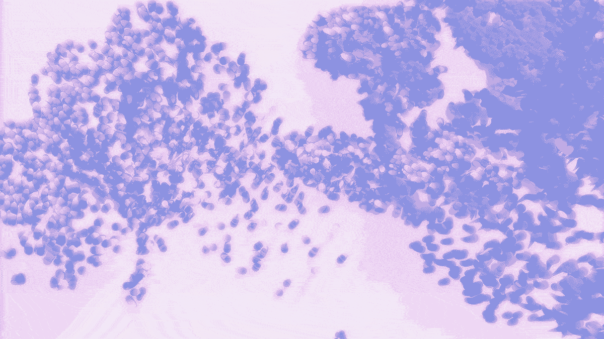

Shanhai 山海
3D Animation Video
The Task
Create an animation short for a 3-wall immersive space
This video was made for my Motion Design class at UCLA. I've long been fascinated by the diversity of wildlife and the intricacy of the natural world. When I heard we had the opportunity to create for a lecture-room-size space, I wanted to create an immersive experience where the audience can feel calmed by nature and get a taste of the beauty of what seems really detached from our oridinary life.
The piece was selected to exhibit at UCLA Design Media Arts's Undergrad Show in 2020.
Skills
3D Modeling
After Effects
Cinema 4D
Process
This imaginary terrain was inspired by the mythic geography from the Chinese book "Classic of Mountains and Seas" (山海经). I built the entire landscape and creatures in Cinema 4D and exaggerated them to make them look more organic and less fabricated.
Simulation
Cinema 4D hair simulation used to create grass -> results from the exhibition
3D Room Mockup
The mockup gave me a good idea of how the space will feel in real life. To make the experience more immersive, I thought to move the audience's attention from one wall to the other using an animated creature.
Show Documentation
Pictures from the show.
 Close-Ups
      